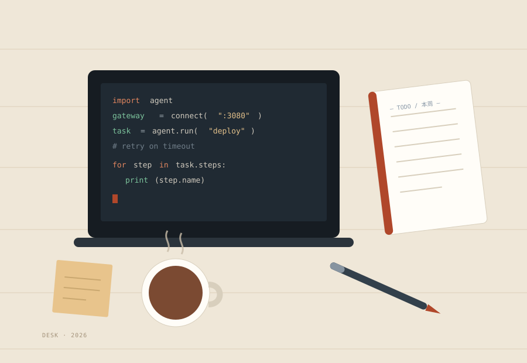

All work
Built, shipped, broken, fixed
Filter by type: if you want to see how I work with models, pick LLM apps; if you want engineering, pick full-stack. Every project has a longer write-up covering where I got stuck.
-

Personal project·
Local LLM agent deployment
DSH framework plus a forwarding gateway, so a coding agent can use DeepSeek end to end.
- DSH
- Agent
- Protocols
-

Personal project·
QQ chatbot
NoneBot2 + NapCat (OneBot 11) + DeepSeek. Persona, memory, image understanding, reminders.
- NoneBot2
- WebSocket
- Daemon
-

Course project·
AI-assisted web development
Vue 3 + FastAPI + MySQL: JWT auth, REST endpoints, Docker Compose deployment.
- Vue 3
- FastAPI
- Docker
-

In progress·
This portfolio
Plain HTML / CSS / JS. No framework, no build step. Semantic markup, dark mode and keyboard support, all by hand.
- Semantic HTML
- Responsive
- Accessibility
Nothing in this category yet — try another one.
Appendix
Attempts that never became projects
Written down to remind myself that the failures are part of the process.
-
—
Local RAG knowledge base
Chunk the slides, build an index, expose a retrieval endpoint. Stuck on Chinese tokenisation and recall quality — it runs, but the answers aren't good enough to use.
-
—
WeChat Reading highlights export
I wanted my highlights as Markdown. The page structure kept changing halfway through parsing, so it's shelved for now.